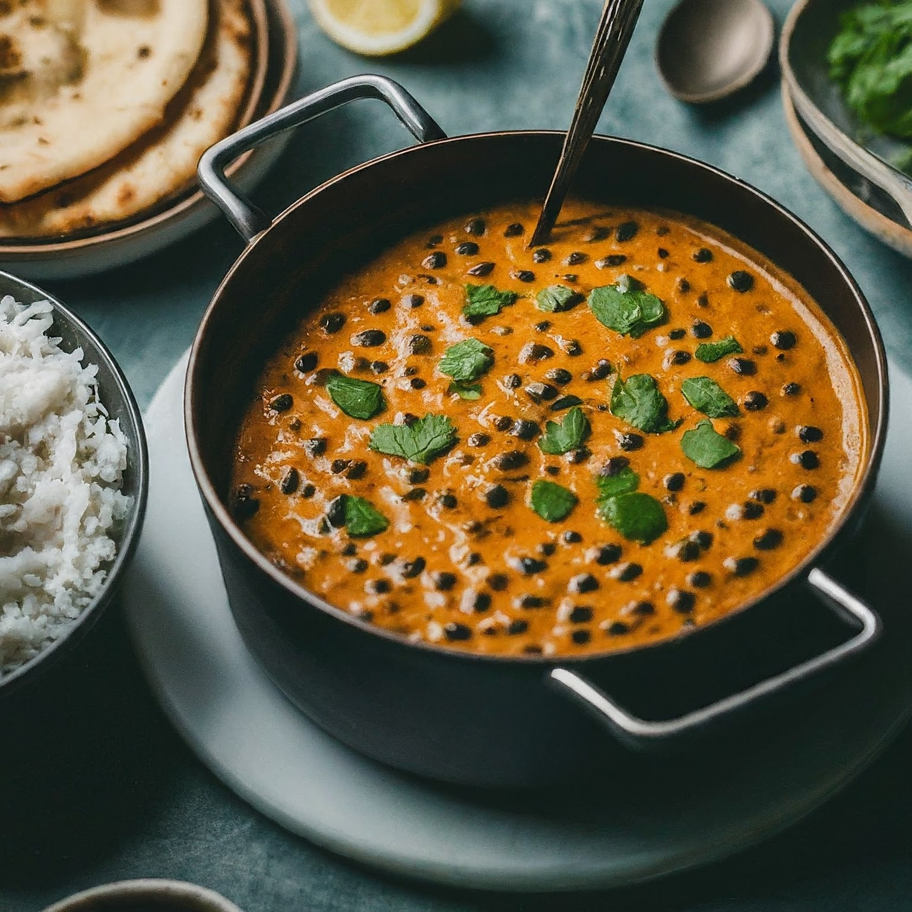

Delicious Dal Makhani
Ingredients:
- 1 cup whole black lentils (sabut urad dal), soaked overnight
- 1/4 cup red kidney beans (rajma), soaked overnight
- 1 large onion, finely chopped
- 2 tomatoes, finely chopped
- 3 cloves of garlic, minced
- 1-inch piece of ginger, minced
- 2 green chilies, slit lengthwise
- 1 teaspoon cumin seeds
- 1/2 teaspoon turmeric powder
- 1 teaspoon red chili powder
- 1 tablespoon coriander powder
- 1 teaspoon garam masala
- Salt to taste
- 2 tablespoons butter
- 2 tablespoons cream (optional)
- Chopped coriander leaves for garnish
Instructions:
1. Rinse the soaked lentils and kidney beans under cold water until the water runs clear. Drain and set aside.
2. In a pressure cooker or a large pot, heat the butter over medium heat. Add the cumin seeds and let them splutter.
3. Add the chopped onions and sauté until they turn golden brown.
4. Add the minced garlic, ginger, and slit green chilies. Sauté for another couple of minutes until the raw smell disappears.
5. Add the chopped tomatoes along with turmeric powder, red chili powder, coriander powder, and salt. Cook until the tomatoes are soft and oil starts separating from the masala.
6. Add the drained lentils and kidney beans to the pot. Stir well to coat them with the masala.
7. Add enough water to cover the lentils and beans by about 1 inch. Adjust the amount of water depending on your preferred consistency.
8. If using a pressure cooker, close the lid and cook on high pressure for about 15-20 minutes or until the lentils and beans are completely cooked.
If using a regular pot, cover and cook until the lentils and beans are soft and cooked through, stirring occasionally. It may take around 45 minutes to 1 hour.
9. Once the lentils and beans are cooked, add garam masala and cream (if using). Mix well and simmer for another 5 minutes.
10. Adjust the consistency by adding more water if needed. Check for seasoning and adjust salt and spices according to your taste.
11. Garnish with chopped coriander leaves and serve hot with rice or naan.
Enjoy your delicious one-pot dal makhani!